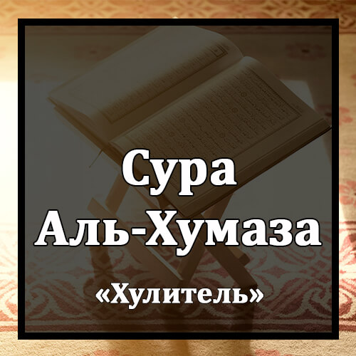

Бисмилляхир-Рахманир-Рахиим
Во имя Аллаха Милостивого и Милосердного!
Уайлюн Ликулли Хумазатин Люмаза.
Горе всякому хулителю и обидчику,
Аль-Лязи Джама`а Малян Уа `Аддада.
который копит состояние и подсчитывает его,
Йахсабу Анна Маляху Ахляда.
думая, что богатство увековечит его.
Калля Ляйунбазанна Филь-Хутама.
О нет! Он будет ввергнут в Огонь сокрушающий.
Уа Ма Адрака Маль-Хутама.
Откуда ты мог знать, что такое Огонь сокрушающий?
НаруЛлахиль-Мукада.
Это - разожженный Огонь Аллаха,
Алляти Таттали`у `Аляль-Аф`ида.
который вздымается над сердцами.
Иннаха `Алейхим Му`сада.
Он сомкнется над ними
Фи `Амадин Мумаддада.
высокими столбами.